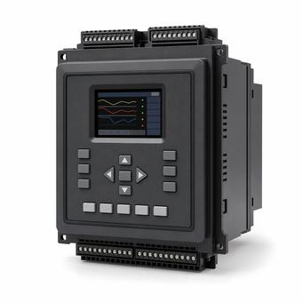

ANSI Device Numbers: Reading 50, 51, 87 and the Rest
The two-digit codes on every protection one-line are IEEE C37.2 device function numbers. Learning twenty of them, plus how the suffixes work, makes a relay schedule readable — and explains why 52a and 52b are the two that catch people out.

Key takeaways
- The numbers come from IEEE C37.2 and name a protective function, not a product. One modern relay performs dozens of them.
- 50 is instantaneous overcurrent, 51 is time overcurrent, 87 is differential. Those three cover most of what appears on a one-line.
- Suffix letters narrow the function: G for ground, N for neutral, T for transformer, B for bus. 51G is ground time overcurrent.
- 52 is the circuit breaker itself. 52a follows the breaker, 52b opposes it, and mixing them up is a wiring error that looks like a logic fault.
On this page · 7 sections
What the numbers are
IEEE C37.2 assigns a number to each device function in a power system, so a one-line diagram, a relay schedule and a protection setting sheet can all refer to the same thing without prose. They are universally called ANSI device numbers, from the standard’s earlier designation, and the usage has not changed.
The important thing about them is that they name a function, not a box. A 1960s panel had one electromechanical relay per number, so the number and the hardware matched. A modern multifunction relay performs 50, 51, 51G, 46, 49, 27, 59, 81 and more simultaneously, and the one-line still shows each function separately because the protection scheme is what the drawing is describing.
The ones worth knowing
| Number | Function |
|---|---|
| 21 | Distance — trips on impedance, used for transmission line protection |
| 25 | Synchronising or sync-check — permits closing only when two sources are in step |
| 27 | Undervoltage |
| 32 | Directional power — commonly reverse power on a generator |
| 46 | Phase balance, or negative-sequence current — catches single-phasing and unbalance |
| 49 | Thermal — machine or transformer overtemperature |
| 50 | Instantaneous overcurrent |
| 51 | Time overcurrent |
| 52 | AC circuit breaker |
| 59 | Overvoltage |
| 63 | Pressure — the sudden-pressure relay on a liquid-filled transformer |
| 64 | Ground detector |
| 67 | Directional overcurrent |
| 81 | Frequency, over or under |
| 86 | Lockout relay — latches a trip until deliberately reset |
| 87 | Differential |
That is sixteen of roughly a hundred, and it will read most industrial and data-centre one-lines. The standard itself is the authority for the rest, including the device numbers used for specific machine and station functions.
Suffixes and combinations
A bare number is often too broad, so C37.2 provides suffix letters that say what the function is applied to. The common ones are G for ground, N for neutral, T for transformer, B for bus, L for line and M for motor.
So 51G is ground time overcurrent, 87T is transformer differential, 87B is bus differential, and 50/51 written together means the instantaneous and time elements of the same overcurrent protection — which is how overcurrent protection is almost always specified, the instantaneous element handling close-in faults and the time element providing coordination.
Where several identical devices exist, a prefix number distinguishes them: 1-51 and 2-51 are two separate time-overcurrent functions. And the difference between G and N is worth knowing, because they are not the same measurement: a G suffix generally refers to a function fed from a ground-sensing arrangement such as a residual or window CT, while N refers to one fed from the neutral conductor. On a drawing they look interchangeable and in the current they are not.
The 52a and 52b trap
Device 52 is the circuit breaker, and its auxiliary contacts carry the two suffixes most likely to cause a real problem.
A 52a contact follows the breaker: closed when the breaker is closed, open when it is open. A 52b contact does the opposite: closed when the breaker is open. The letters are not arbitrary and they are not a manufacturer convention — they are the standard, and every schematic assumes them.
They matter because the trip coil is wired through a 52a: there is no reason to energise a trip coil on an already-open breaker, and leaving it energised would burn it out. The close circuit is wired through a 52b for the mirror-image reason. Swap them and the breaker will refuse to trip, or will trip and immediately attempt to reclose, and the symptom presents as a control-logic fault rather than as two wires in the wrong terminals.
Reading a one-line with them
In practice the numbers cluster in recognisable patterns, and recognising the pattern is faster than decoding each number.
A transformer protection package is typically 87T differential, 50/51 on each side for backup overcurrent, 51G for ground faults, 49 and 63 from the transformer’s own thermal and pressure devices, all collected into an 86 lockout so that a transformer trip stays tripped until somebody has looked at it.
A generator package adds 32 reverse power, 40 loss of field, 46 negative sequence and 25 sync-check. A motor feeder is usually 50/51, 49 or 51 as overload, 46 for single-phasing and 27 for undervoltage. An incoming utility feeder carries 27, 59, 81 and often 67 directional overcurrent where the service can backfeed.
Common mistakes
- Reading a number as a device. One multifunction relay provides many numbers; one number does not imply one box to buy.
- Swapping 52a and 52b. The classic control-wiring error, and the symptom looks like a logic problem rather than a wiring one.
- Treating 51G and 51N as the same function. Different source of current, different sensitivity, and they do not detect the same faults equally.
- Omitting 86 and wiring trips directly. Without a lockout, a transformer or bus trip can be reclosed onto a fault by someone who did not know why it opened.
- Specifying 50 without coordination. An instantaneous element set too low defeats selective coordination with everything downstream of it.
Frequently asked questions
What do ANSI device numbers 50, 51 and 87 mean?
50 is instantaneous overcurrent, 51 is time overcurrent, and 87 is differential protection. They come from IEEE C37.2, which assigns a number to each device function so that one-line diagrams and relay schedules can reference functions without prose. Written together as 50/51 they mean the instantaneous and time elements of the same overcurrent protection.
What is the difference between 52a and 52b?
Device 52 is the AC circuit breaker. A 52a auxiliary contact follows the breaker, closed when the breaker is closed. A 52b contact is the opposite, closed when the breaker is open. The trip coil is wired through a 52a so it cannot be energised on an already-open breaker; the close circuit uses a 52b. Swapping them produces a breaker that will not trip, and the symptom looks like a control-logic fault.
What do the suffix letters on device numbers mean?
They narrow the function to what it is applied to. G is ground, N is neutral, T is transformer, B is bus, L is line and M is motor. So 51G is ground time overcurrent, 87T is transformer differential and 87B is bus differential. A prefix number distinguishes several identical devices, as in 1-51 and 2-51.
Is one device number one relay?
Not any more. In electromechanical panels each number was a separate relay, so the number and the hardware matched. A modern multifunction relay performs dozens of functions at once, and the one-line still shows each separately because the drawing is describing the protection scheme rather than the equipment list.
Next steps
The switchgear components reference covers the relays and trip units themselves, and short-circuit studies and coordination covers what the settings behind these numbers are chosen against.
Run the numbers
- Available Fault Current CalculatorThe current these elements are set against.
- Arc-Flash Incident Energy CalculatorHow clearing time, and therefore the settings, drive incident energy.
Cite or link to this guide
Free to quote with attribution. Suggested citation: Voltfield Editorial Team, “ANSI Device Numbers: Reading 50, 51, 87 and the Rest,” Voltfield, updated November 3, 2026. https://voltfield.org/guide-ansi-device-numbers.html
Get new guides by email
One short email when a new guide or calculator is published, at most once a month. Your address is used for nothing else.